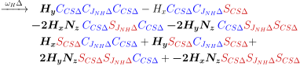
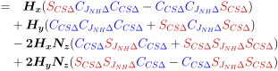

1 INEPT and Signal Enhancement
The purpose of the INEPT sequence Morris GA, Freeman R. Enhancement of Nuclear Magnetic Resonance Signals by Polarization Transfer. J Am Chem Soc. 1979;101(3):760–762. is to transfer the large magnetization from high-γ nuclei, like 1H or 19F, to low-γ nuclei (labeled ‘X’), like 13C and 15N. This transfer significantly improves the signal intensity of ‘X’ nuclei when measuring their chemical shifts. For example, the magnetic moment and magnetization of 1H nuclei is roughly 4 times greater than 13C and 10 times greater than 15N. Additionally, the 1H T1 is typically much shorter than the T1 for 13C or 15N, which allows a shorter recycle delay and the collection of a greater number of spectra.
1.1. Theory
The INEPT sequence (Fig. 1.1) transfers magnetization from 1H nuclei bonded the ‘X’ nuclei. The two nuclei must be bonded, or at least connected through intermediary bonds with other atoms, because the nuclei must share a J-coupling.
The INEPT sequence comprises a set of 90○ pulses (thin bars), 180○ pulses (thick bars) and delays (Δ).
1.1.1. Methine, Amide and the AX Spin Systems
The first 90○
x (1H) pulse creates 1H magnetization.
A 90○
x pulse rotates the magnetization by 90○ with a phase
of ‘x’. Thereafter, the 1H 180○ pulse in the middle of the two
Δ delays acts as a Hahn-echo to refocus the 1H chemical
shifts. Without the accompanying 180○ pulse on the ‘X’ channel, the
J-coupling between the 1H and X nucleus would be refocused as
well—and nothing would be accomplished. The 180○ pulse on the ‘X’
channel acts to cancel the refocusing effect of the 1H 180○
pulse for the J-coupling.
During the first delta period, the magnetization evolves under the 1H chemical shift (ωH) and the 1H-X J-coupling. Since the chemical shift and J-coupling Hamiltonians commute, the rotations of each can be conducted sequentially.
In the first step, the operators are propagated for the 90○
x (1H) pulse
and the first 'Δ' period. We’ll use a 15N nucleus as an example
of an ‘X’ nucleus.
In the second step, the 180○
x pulses on the 1H and
‘X’ channels inverts  and terms because
these are orthogonal to the x-phase of the pulse.
The many cosine and sine terms can be abbreviated to simplify
their notation in equations.
and terms because
these are orthogonal to the x-phase of the pulse.
The many cosine and sine terms can be abbreviated to simplify
their notation in equations.

In the third step, we’ll propagate the `Δ' delay for the chemical shift first.

These terms can be grouped.

Thereafter, we propagate the 'Δ' delay for the JNH-coupling and simplify the expression.